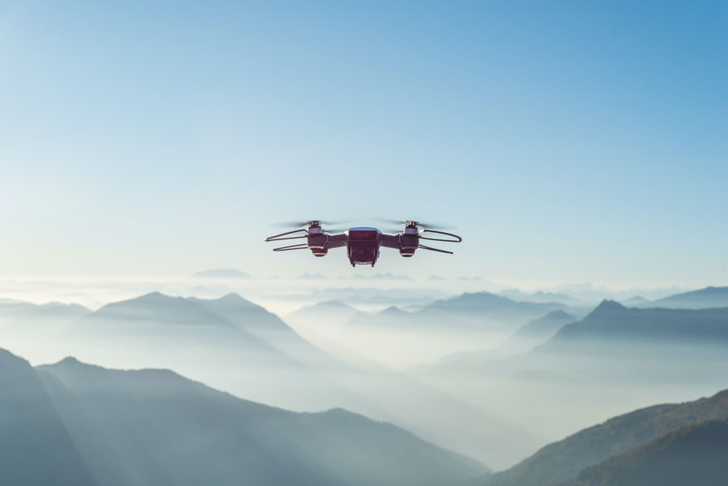

"I just knew it! Well, I wasn't gonna let you get all the credit and take
all the reward. Hey, I knew there was more to you than money. Oh, no! Oh,
my! Artoo! Can you hear me?""
Toujours plus de drône dans le ciel
Publié le 10 février 2025 par James Webb
Your friend is quite a mercenary. I wonder if he really cares about
anything...or anyone. I care! So...what do you think of her, Han? I'm
trying not to, kid! Good... Still, she's got a lot of spirit. I don't know,
what do you think? Do you think a princess and a guy like me... No!

Le drône est-t'il le nouveau meilleur ami de l'homme?
En lire plus
Internet, c'était mieux avant
Publié le 7 janvier 2025 Arthur Poulas
Yes. Our scout ships have reached Dantooine. They found the remains of a Rebel
base, but they estimate that it has been deserted
Au moins on peut toujours changer son fond d'écran.
for some time. They are now conducting an extensive search of the surrounding systems.